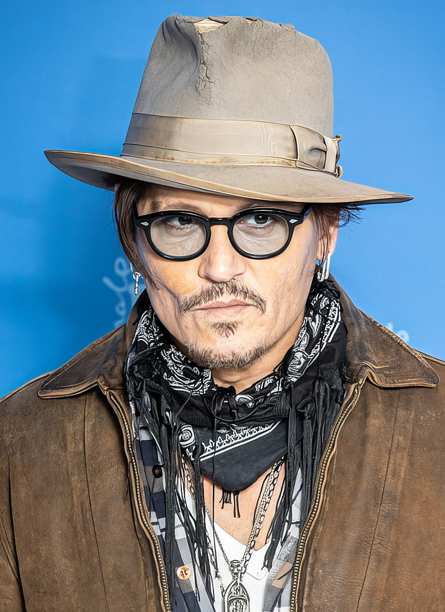

Nacio el 9 de junio de 1963 en Owensboro Kentuky Estados Unidos
Es un actor, productor de cine, musico, entre otras
John Christopher Depp II o tambien conocido como "Johnny Depp", es uno de los actores de más carismáticos y talentosos de la industria hollywoodiense, protagonista de películas tan populares como la saga Piratas del Caribe, Eduardo Manostijeras, Sleepy Hollow, Alicia en el País de las Maravillas o Charlie y la fábrica de chocolate.

Un retrato de nuestro querido actor
La saga de piratas del caribe dio inicio en 2003 con (Pirates of the Caribbean: The Curse of the Black Pearl),y recaudó 654 millones de dólares en todo el mundo, convirtiéndose en un éxito total
Charlie y la fábrica de chocolate (Charlie and the Chocolate Factory) es una película estrenada en el año 2005, dirigida por Tim Burton. Es la segunda adaptación cinematográfica de la novela homónima escrita por Roald Dahl en 1964
En noviembre de 2013, Johnny Depp y Mia Wasikowska confirmaron su participación en la segunda parte de la película, que se empezó a grabar en julio de 2014 y su estreno fue el 27 de mayo de 2016, bajo el nombre de Alicia a través del espejo.
Edward Scissorhands ( Eduardo Manostijeras ) es una película estadounidense de 1990 dirigida por Tim Burton y escrita por Caroline Thompson, que mezcla géneros como la fantasía oscura junto con elementos románticos.